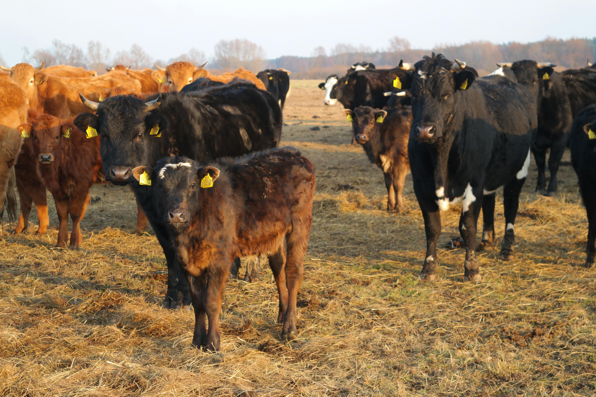
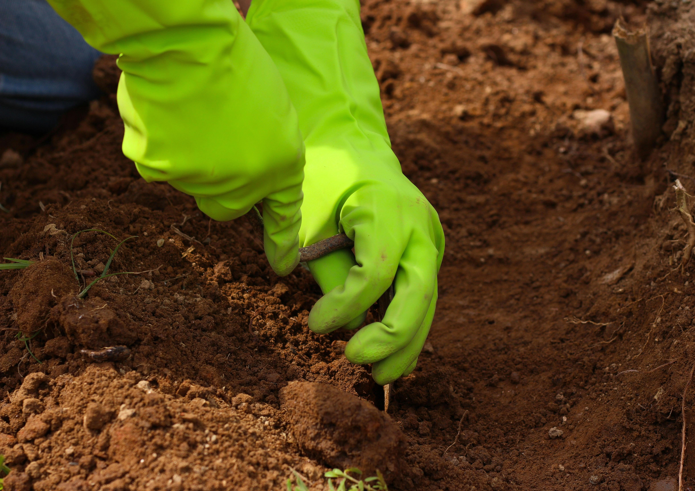
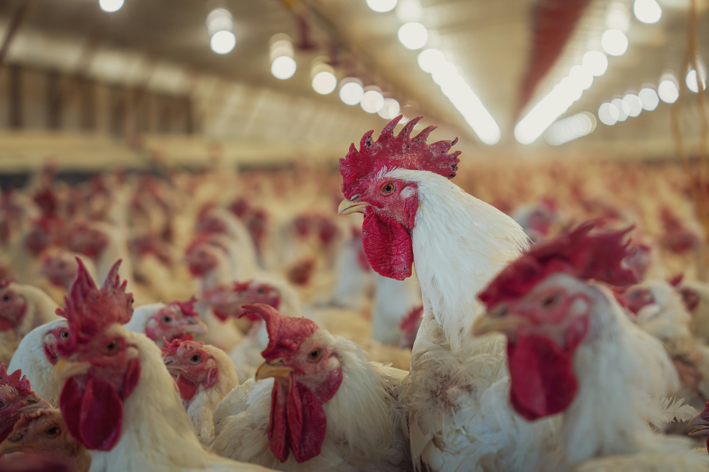

🌾 Agriculture at AgroLife
All branches of agriculture in one place.

Crop Farming
Growing wheat, rice, fruits and vegetables.

Horticulture
Cultivation of fruits, flowers and plants.

Livestock Farming
Rearing cows, goats, sheep and poultry.

Irrigation
Drip and sprinkler irrigation techniques.

Organic Farming
Eco-friendly and chemical-free farming.

Soil Management
Soil conservation and fertility improvement.

Dairy Farming
Milk production and cattle management.

Poultry Farming
Rearing chickens for eggs and meat.

Farm Machinery
Modern tools and equipment in agriculture.